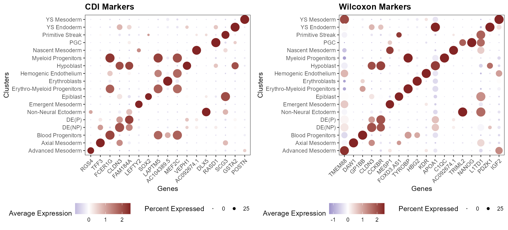

Identifying Differentially Expressed Genes using the Co-Dependence Index
Compiled: 2022-01-19
DEG.RmdLoad Seurat object
For this tutorial we will analyze the Human Gastrulation dataset reported by Tyser 2021. The dataset consists of 1195 cells. We will perform differential expression analysis using two methods: co-dependency index (CDI) and wilcoxon test.
We start by reading in the data and visualizing the annotated population. We are interested in identifying cell-type specific markers.
# load package
library(scMiko)
# load human gastrulation data
so.query <- readRDS("../data/so_tyser2021_220621.rds")
# visualize clusters
cluster.UMAP(so = so.query, group.by = "sub_cluster") + theme_void() + labs(title = "Tyser 2021",
subtitle = "Human Gastrulation")
Perform differential gene expression analysis
To identifying cell-type specific markers, we will perform CDI- and Wilcoxon-based differentially-expressed gene (DEG) analyses. Since CDI is more computationally intensive, we will focus on the subset of genes that are expressed within the dataset.
# get expressed genes
expr_gene <- getExpressedGenes(object = so.query)
# CDI
cdi_output <- findCDIMarkers(object = so.query, features.x = "sub_cluster", features.y = expr_gene)
# Wilcoxon
wilcoxon_output <- getDEG(object = so.query, group_by = "sub_cluster", auc.thresh = NA, fdr.thresh = NA,
return.all = T, return.list = F)Once the analysis has be complete, we can visualize the top differentially-expressed genes using Seurat’s DotPlot function.
# get top markers
wilcoxon_output.top <- wilcoxon_output %>%
dplyr::group_by(group) %>%
dplyr::top_n(n = 1, wt = auc)
cdi_output$group <- factor(gsub("sub_cluster_", "", cdi_output$feature.x), levels = unique(wilcoxon_output.top$group))
cdi_output <- cdi_output %>%
dplyr::arrange(group)
cdi_output.top <- cdi_output %>%
dplyr::group_by(feature.x) %>%
dplyr::top_n(n = 1, wt = ncdi)
# generate dot plots
plt.cdi_dot <- DotPlot(object = so.query, features = unique(cdi_output.top$feature.y), group.by = "sub_cluster") +
scale_color_miko() + labs(title = "CDI Markers", y = "Clusters", x = "Genes") + theme_miko(legend = T,
x.axis.rotation = 45) + theme(legend.position = "bottom")
plt.wilcoxon_dot <- DotPlot(object = so.query, features = unique(wilcoxon_output.top$feature), group.by = "sub_cluster") +
scale_color_miko() + labs(title = "Wilcoxon Markers", y = "Clusters", x = "Genes") + theme_miko(legend = T,
x.axis.rotation = 45) + theme(legend.position = "bottom")
# visualize
print(cowplot::plot_grid(plt.cdi_dot, plt.wilcoxon_dot, nrow = 1))
Finally, we can compare the relative sensitivity and specificity of markers obtained by each method.
# get top 10 markers per cluster
cdi_output.top <- cdi_output %>%
dplyr::group_by(feature.x) %>%
dplyr::top_n(n = 10, wt = ncdi)
wilcoxon_output.top <- wilcoxon_output %>%
dplyr::group_by(group) %>%
dplyr::top_n(n = 10, wt = auc)
# get sensitivity and specificity indices that were calculated by getDEG()
cdi_sensitivity <- wilcoxon_output %>%
dplyr::filter(paste0(feature, "_", group) %in% paste0(cdi_output.top$feature.y, "_", cdi_output.top$group))
cdi_sensitivity$method <- "CDI"
wilcoxon_sensitivity <- wilcoxon_output %>%
dplyr::filter(paste0(feature, "_", group) %in% paste0(wilcoxon_output.top$feature, "_", wilcoxon_output.top$group))
wilcoxon_sensitivity$method <- "Wilcoxon"
df.eval <- bind_rows(cdi_sensitivity, wilcoxon_sensitivity)
# generate plots
plt_sensitivity <- df.eval %>%
ggplot(aes(x = method, y = sensitivity, fill = method)) + geom_boxplot() + ggbeeswarm::geom_quasirandom() +
theme_miko(fill.palette = "ptol") + labs(title = "Sensitivity") + ylim(c(0, 1))
plt_specificity <- df.eval %>%
ggplot(aes(x = method, y = specificity, fill = method)) + geom_boxplot() + ggbeeswarm::geom_quasirandom() +
theme_miko(fill.palette = "ptol") + labs(title = "Specificity") + ylim(c(0, 1))
cowplot::plot_grid(plt_sensitivity, plt_specificity)